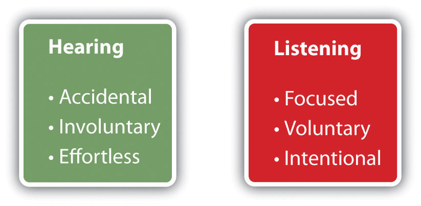

HearingAn accidental and automatic brain response to sound. is an accidental and automatic brain response to sound that requires no effort. We are surrounded by sounds most of the time. For example, we are accustomed to the sounds of airplanes, lawn mowers, furnace blowers, the rattling of pots and pans, and so on. We hear those incidental sounds and, unless we have a reason to do otherwise, we train ourselves to ignore them. We learn to filter out sounds that mean little to us, just as we choose to hear our ringing cell phones and other sounds that are more important to us.
Figure 4.1 Hearing vs. Listening
Listening, on the other hand, is purposeful and focused rather than accidental. As a result, it requires motivation and effort. ListeningFocused, concentrated attention for the purpose of understanding the meanings expressed by a speaker., at its best, is active, focused, concentrated attention for the purpose of understanding the meanings expressed by a speaker. We do not always listen at our best, however, and later in this chapter we will examine some of the reasons why and some strategies for becoming more active critical listeners.
Listening should not be taken for granted. Before the invention of writing, people conveyed virtually all knowledge through some combination of showing and telling. Elders recited tribal histories to attentive audiences. Listeners received religious teachings enthusiastically. Myths, legends, folktales, and stories for entertainment survived only because audiences were eager to listen. Nowadays, however, you can gain information and entertainment through reading and electronic recordings rather than through real-time listening. If you become distracted and let your attention wander, you can go back and replay a recording. Despite that fact, you can still gain at least four compelling benefits by becoming more active and competent at real-time listening.
When you focus on the material presented in a classroom, you will be able to identify not only the words used in a lecture but their emphasis and their more complex meanings. You will take better notes, and you will more accurately remember the instructor’s claims, information, and conclusions. Many times, instructors give verbal cues about what information is important, specific expectations about assignments, and even what material is likely to be on an exam, so careful listening can be beneficial.
When you give your best attention to people expressing thoughts and experiences that are important to them, those individuals are likely to see you as someone who cares about their well-being. This fact is especially true when you give your attention only and refrain from interjecting opinions, judgments, and advice.
When you listen well to others, you reveal yourself as being curious and interested in people and events. In addition, your ability to understand the meanings of what you hear will make you a more knowledgeable and thoughtful person.
When you listen well to others, you start to pick up more on the stylistic components related to how people form arguments and present information. As a result, you have the ability to analyze what you think works and doesn’t work in others’ speeches, which can help you transform your speeches in the process. For example, really paying attention to how others cite sources orally during their speeches may give you ideas about how to more effectively cite sources in your presentation.